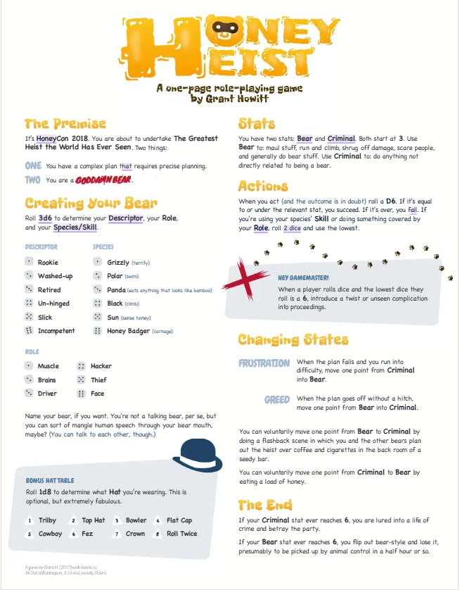
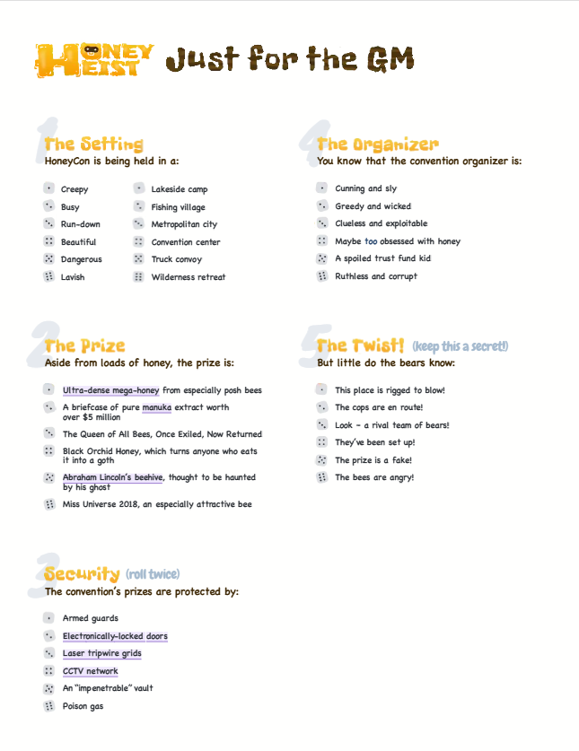
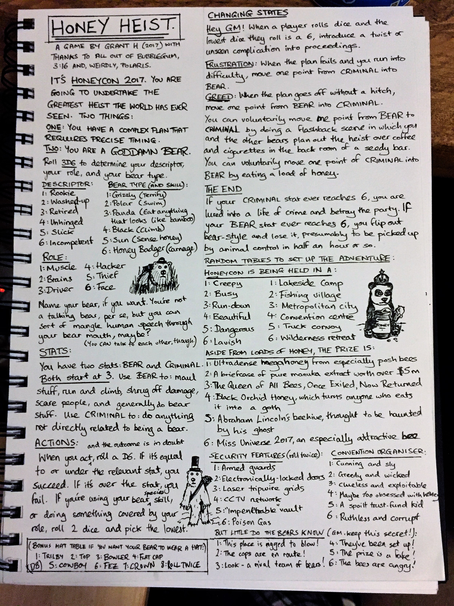

Honey Heist
Sistem Hakkında ve Kurallar
Honey Heist, Grant Howitt tarafından tasarlanmış son derece eğlenceli, hızlı ve tek sayfalık bir "One-Page RPG" (Rol Yapma Oyunu) sistemidir. Bu oyunda tüm oyuncular birer ayıdır ve dünyanın en büyük bal soygununu (örneğin yıllık Bal Konvansiyonu'nu) gerçekleştirmek için bir araya gelmiş suçlu bir ekiptir. 1. Karakter Oluşumu: Her oyuncu iki şeye karar verir: * Ayı İsmi: Ayınızın adı ve insan kıyafetleri altında sakladığı gizli kılıfı (örneğin: Şapka giyen boz ayı "Büyük Bayır"). * Uzmanlık (Special): Hırsızlıkta size yardımcı olacak garip bir yetenek (örneğin: Çok iyi kilit açma, bisiklete binebilme, insan sesini taklit edebilme vb.). 2. Temel İstatistikler (Statler): Karakterinizin sadece iki ana istatistiği vardır: * Bear (Ayı): Ne kadar vahşi, güçlü ve hayvani olduğunuzu gösterir. * Criminal (Suçlu): Ne kadar kurnaz, akıllı ve insan gibi düşünebildiğinizi gösterir. * Önemli Kural: Bu iki statin toplamı her zaman 6 olmalıdır (Örn: 3 Bear / 3 Criminal veya 5 Bear / 1 Criminal). Oyun sırasında kazandığınız veya kaybettiğiniz puanlara göre bu denge sürekli değişir. 3. Oyun Mekaniği ve Zar Atma: Bir eylem gerçekleştireceğiniz zaman (kapı kırmak, bal kavanozunu saklamak, insanlara saldırmak vb.): * Eğer kurnazca, insan gibi bir iş yapıyorsanız Criminal stat'inize eşit veya altındakileri atmaya çalışırsınız (D6 zar atılır). Başarılı olursanız stat'iniz 1 azalır, Bear stat'iniz 1 artar. * Eğer tamamen vahşi bir ayı gibi davranarak iş hallediyorsanız Bear stat'inize eşit veya altındakileri atmaya çalışırsınız. Başarılı olursanız stat'iniz 1 azalır, Criminal stat'iniz 1 artar. * Eğer zar atarken attığınız zar mevcut ilgili stat'inize tam olarak eşit gelirse bir Kritik Başarı elde edersiniz ve istatistiklerinizden biri sıfırlanıp diğeri 6 olur! 4. Oyunun Sonu ve Kırılma Noktaları: * Eğer Bear stat'iniz 6 olursa, tamamen kontrolden çıkarsınız ve vahşi bir canavara dönüşürsünüz (artık soygunu yönetemez, sadece etrafa saldırırsınız). * Eğer Criminal stat'iniz 6 olursa, tamamen insanlaşırsınız ve ayı doğanızı kaybedip oyundan düşersiniz. * Altın Kurallar: 1) Asla plana sadık kalma. 2) Gözünü bal bürüsün, her fırsatta bal ye!
Oyun İçi Görseller


